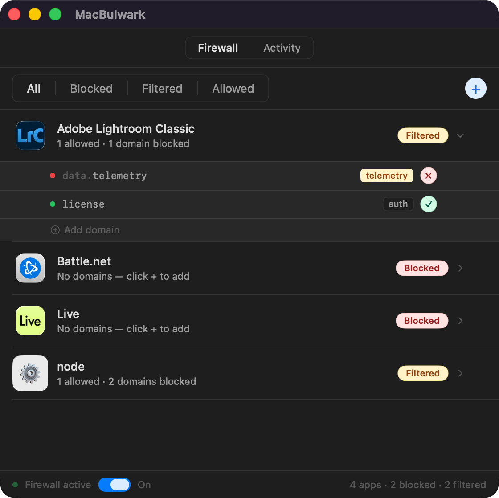

MacBulwark lets you block any app from talking to the internet — or filter it down to just the domains you trust. Rules live in a system extension, so blocking sticks even when the app is closed.
Apps live in one of three states. You decide which one — per app, or per domain.
Add an app and all its outgoing traffic stops. No background updaters, no telemetry, no licence pings — until you say otherwise.
Expand any app to see its domains. Block the analytics endpoint, allow the licence server. The rest passes through unchanged.
Apps you trust aren't sent to the extension at all. Zero overhead, zero filtering — just monitored if you want it.
No menubar maze, no nested settings panes. Every monitored app, every rule, the firewall toggle — all on one screen.

Expand any app to see exactly which hostnames it talks to, with purpose tags so you know what each one is for.
The Activity tab shows recent connections per app. Block any app you didn't expect with one click.
The bottom bar tells you the extension is alive and enforcing. No guesswork, no ambiguous tray icons.
Drag the app to /Applications, click Enable, and approve the system extension once in System Settings.
Hit the + button, pick any app from /Applications, and it's added with all connections blocked by default.
Click a row to expand its domain list. Allow what you trust, block what you don't, edit purpose tags.
The extension keeps enforcing rules even after you quit the app. Open MacBulwark only when you want to change something.
Every domain MacBulwark detects gets a tag so you can decide at a glance. Yellow tags are sensitive — usually data leaving your machine.
Crash and diagnostics data sent back to the developer.
Usage statistics and behavioural tracking.
Content delivery — images, fonts, static assets.
Login, OAuth, or identity verification.
Data sync with a cloud service or server.
Account management and user profiles.
Audio or video streaming.
Catalogue, search, or library data.
Software update checks and downloads.
AI/ML inference endpoints.
A flat licence, no subscription. Trial mode is full-featured for 24 hours so you can actually evaluate it.
If you don't see yours here, the manual covers the deep end of how rules are enforced.
Yes. Rules live in a system network extension that runs independently. Once installed, it starts on every boot and enforces blocks until you explicitly remove them.
Blocked drops every connection from that app. Filtered is denylist-based: only domains you've explicitly marked as blocked are dropped — everything else passes through. Allowed apps aren't sent to the extension at all.
The extension only inspects traffic from apps you've added. Apps in the Allowed state aren't touched. In practice the overhead is negligible.
No telemetry, no analytics. Licence verification talks once to Payhip when you register or unregister, and that's the only outbound request MacBulwark makes.
macOS 13 Ventura and later, on Apple Silicon and Intel. The system extension API requires modern macOS.
Yes. Open the licence dialog and click Unregister to deactivate the current machine on Payhip, then enter the same key on the new one.